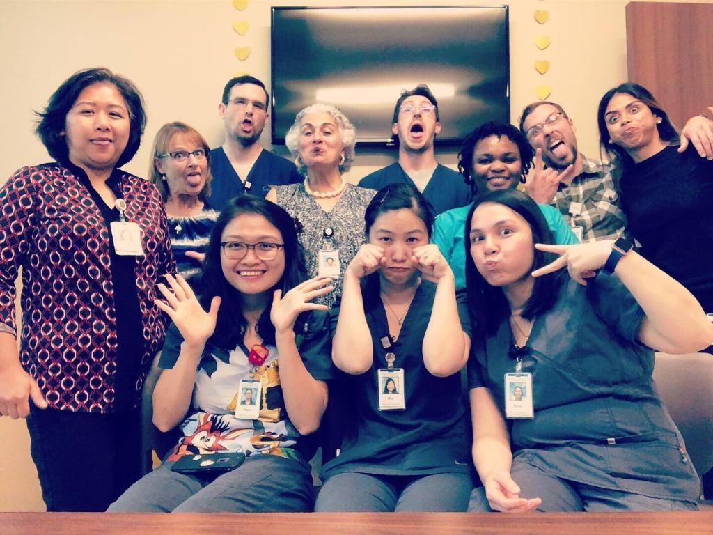

EDUCATION
University of Houston Downtown, TX -08.2021- Bachelor in Computer Science
Lone Star Community College, TX-08.2019- High Honor in Computer Science.
HoustonCommunity College, TX-08.2016-High Honor in Medical Laboratory in Applied Science.
TOOLS AND ENVIRONMENT
Visual Studio IDE, Visual Studio Code, X-code, Html, Sublime Text, Mac OS, Windows, Github
Self-learning Javascript, HTML, CSS
LANGUAGES
C++,Java,HTML,CSS, JavaScript
UNDERGRADUATE PROJECTS
Completed online Udemy boot camp for making web applications using HTML,CSS, JavaScript, Bootstrap,Unix,jQuery,NodeJS,..
Designed museum of candy using bootstrap, html and css
Designed color projects to create RGB color guessing game
Created personal resume website on Github and deploy it on domain system
SKILLS
Troubleshooting, Multitasking, Fast Learning, Great Communications, Leadership
AWARDS
Earned Employee Of The Month 2018 at Concord Life Sciences
Achieved Employee of 3rd Quarter 2019 at Cypress Memorial Hermann Hospital after 7 months of working
Exceeded Employment Evaluation in the year of 2019
EXPERIENCE
Memorial Hermann, TX — Medical Laboratory Tech-08.2018 - PRESENT
Experienced using Lab Information System as end user to access patient chart and report the result as well as order tests
Performed quality control and resolved any errors of all machines to ensure the best results for all the tests.
Advised and informed doctors on any miss handling samples, critical result, specimen re-collection.
Performed and conducted tests (liver, cholesterol, blood type, gram stain, body fluid, drug screen, Covid-19,...) to coordinate with doctors and other medical staff in order to diagnose patient health
Issued blood units, identified antibody, investigate transfusion reaction on blood transfusion to ensure patient safety
Concord Life Sciences, TX — Medical Laboratory Tech-12.2017 - 2018
Performed hematology cell count and manual difference of blood slide in order to diagnosed patient with infection, anemia and cancer state
Trained new laboratory techs to ensure staffs have adequate skills
West Houston Medical Center, TX — Medical Laboratory Tech-09. 2016 - 09. 2018
Conducted testing chemistry and Stat lab to provide the fastest result for doctors
Evaluated send out samples and informed phlebotomists if recollection needed